자린고비 · TEAM PROJECT Content Design
TEAM PROJECT


WHY JARINGOBI
“아껴야 한다”보다
“계속 하고 싶다.”
절약을 해야 하는 일이 아닌,
계속 참여하고 싶은 습관 경험으로.
20대에게 현실적인 재테크는 소비를 줄이는 습관이라고 보았습니다. 하지만 기록만으로는 그 습관을 오래 이어가기 어렵다고 판단했습니다.
그래서 절약 챌린지가 캐릭터 성장과 보상으로 이어지고, 커뮤니티에서 함께 참여하는 경험을 기획했습니다.
- 현실적인 절약 습관
- 행동이 이어지는 보상
- 함께하는 참여 경험
MAIN SCREENS
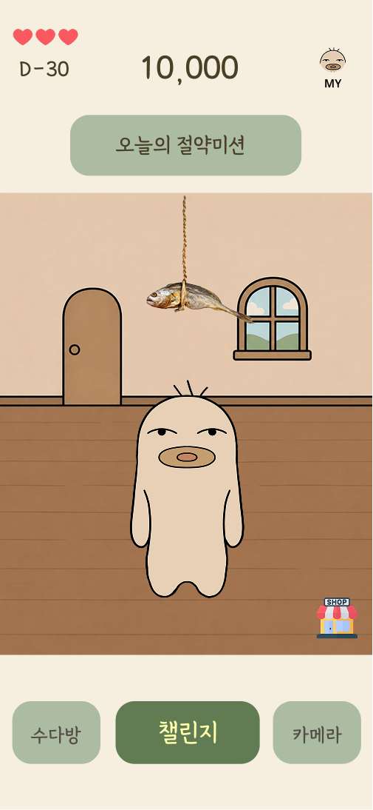

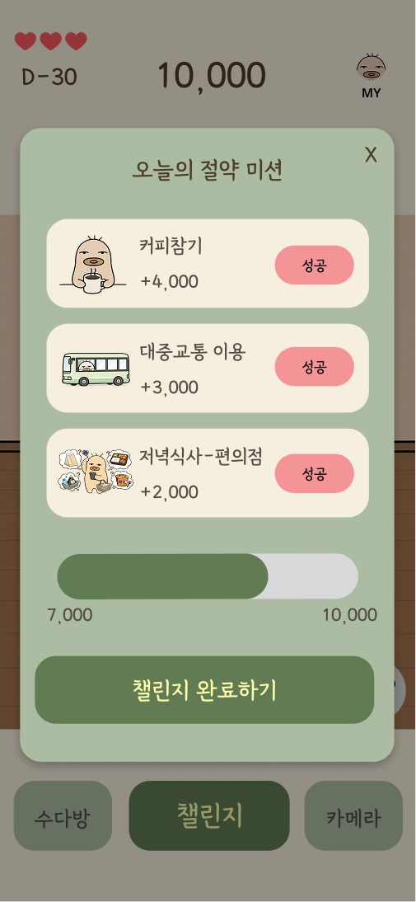
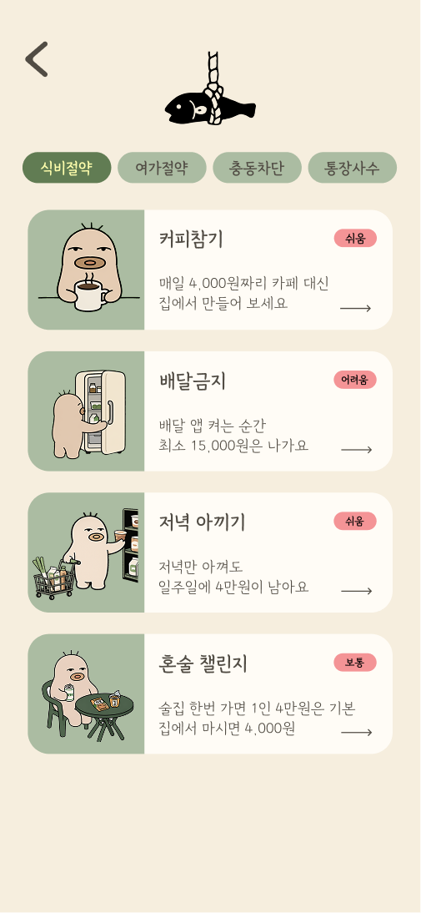
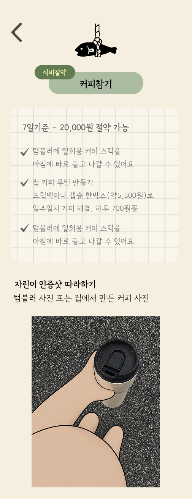
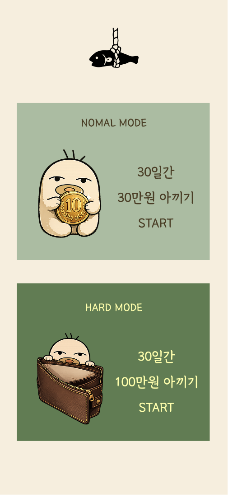
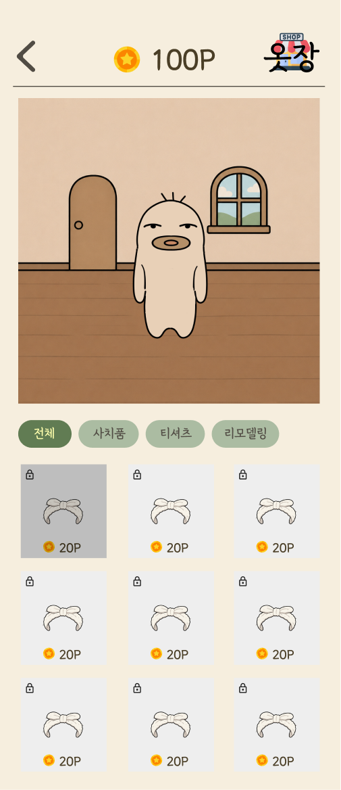
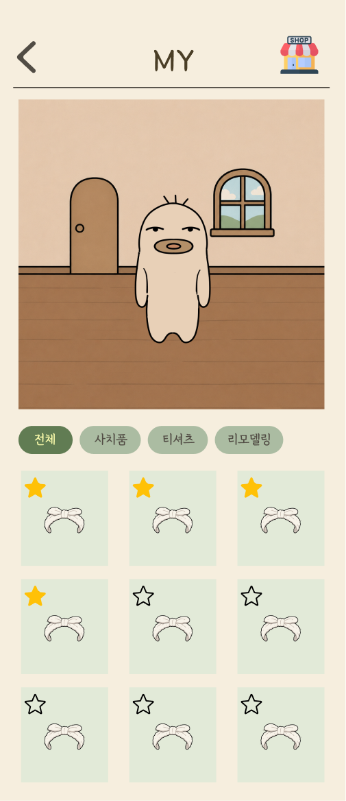
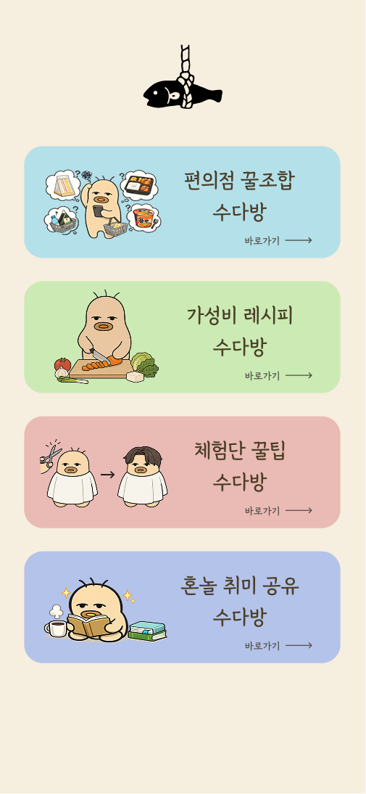
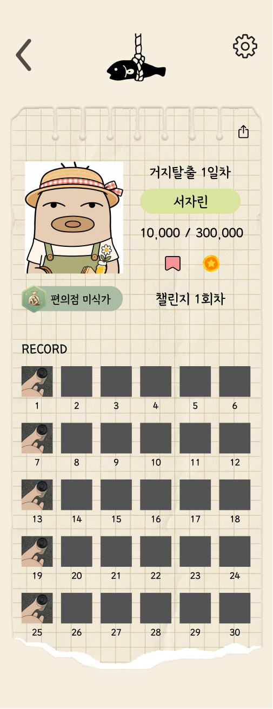
KEY SCREENS
HOME — 메인 화면
오늘의 절약미션과 자린이의 방을 함께 보여줍니다.수다방·챌린지·카메라로 이어지는 주요 메뉴를 배치했습니다.
DAILY CHALLENGE — 데일리 챌린지
절약미션과 보상을 한 목록에서 확인합니다.선택한 미션을 모아 챌린지에 참여하도록 구성했습니다.
COMMUNITY — 수다방
편의점·가성비 레시피 등 주제별 수다방을 보여줍니다.절약 이야기와 생활 팁을 나누는 참여 공간입니다.
자린고비 | DESIGN SYSTEM
단순하고 친근한 로고와 생활형 감성의 디자인 시스템
Color
Typography
강원교육모두체Light / Bold
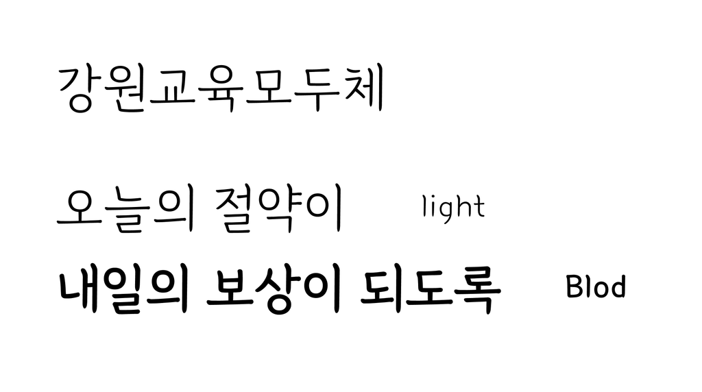
손글씨의 친근함으로 다이어리와 가계부를 기록하는 감성을 담았습니다.
Logo Design
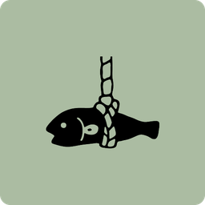
전통적인 ‘자린고비’ 이미지를 현대적인 생활형 감성으로 재해석했습니다.
단순하고 친근한 형태로 로고를 구성했습니다.
Before & After

Before
검색과 추천 정보의 우선순위가 불명확했습니다.

After
검색을 핵심 영역으로 배치하고 브랜드 인상을 강화했습니다.
CHARACTER DESIGN
절약 활동과 캐릭터 성장 경험을 연결하기 위한 자린고비 캐릭터 디자인
AI CHARACTER APPLICATION
SNS MARKETING
출시 전, 팬덤부터 만들다.
바이브코딩으로 제작한 자린고비 프로젝트를 알리기 위해, 앱 출시 전부터 제작 과정과 캐릭터 콘텐츠를 Instagram·TikTok에 공유했습니다.
- 현실 공감형 콘텐츠
- 제작 비하인드
- 자린이 캐릭터 콘텐츠
 Instagram
InstagramTEAM CONTRIBUTION
함께 만든 서비스, 각자의 역할
4인 팀이 기획·디자인·개발 영역을 나누어 자린고비 프로젝트를 제작했습니다.
서지원
PM · UX · FRONTEND
- 서비스 구조 · 사용자 플로우 설계
- 온보딩 · 챌린지 · 명예의전당 UX
- React Native · Capacitor 빌드
- Google Play 내부 테스트 · QA
박민주
PLANNER · MARKETER
- 타깃 · 경쟁사 리서치 / 트렌드
- 서비스 정책 · 챌린지 콘텐츠
- 인스타 릴스 마케팅 전략
- UI 컴포넌트 · 피드백 정리
강양정
AI DESIGN · FRONTEND
- AI 이미지 프롬프트 설계
- 캐릭터 · 배경 스타일 가이드
- Figma UI 시안 · 인터랙션
- 배경 / 오브젝트 에셋 제작
박효은
CHARACTER · UI DESIGN
- 자린이 캐릭터 · 감정 표현 설계
- 의상 / 아이템 200+ 디자인
- 상점 · 옷장 UI · 아이콘 작업
- 앱 화면 퍼블리싱 · 디자인 QA
DESIGN OUTCOME
절약을 기록하는 경험에서,
참여하고 성장하는 경험으로.
캐릭터 디자인 시스템
자린이 원화·표정·응용 디자인 제작
캐릭터 활용 기준 및 디자인 일관성 정리
게임형 절약 경험
절약 미션·보상·꾸미기 요소를 연결한 앱 구성
절약 행동이 성장 경험으로 이어지는 서비스 구조 설계
SNS 콘텐츠 확장
프로젝트 콘셉트를 활용한 Instagram·TikTok 콘텐츠
앱 제작 과정과 캐릭터 세계관을 활용한 홍보 콘텐츠 구성
THANK YOU FOR WATCHING
함께 만들어갈 새로운 경험을 기다립니다.
작업물을 봐주셔서 감사합니다.
프로젝트 및 채용 관련 문의는 편하게 연락해 주세요.